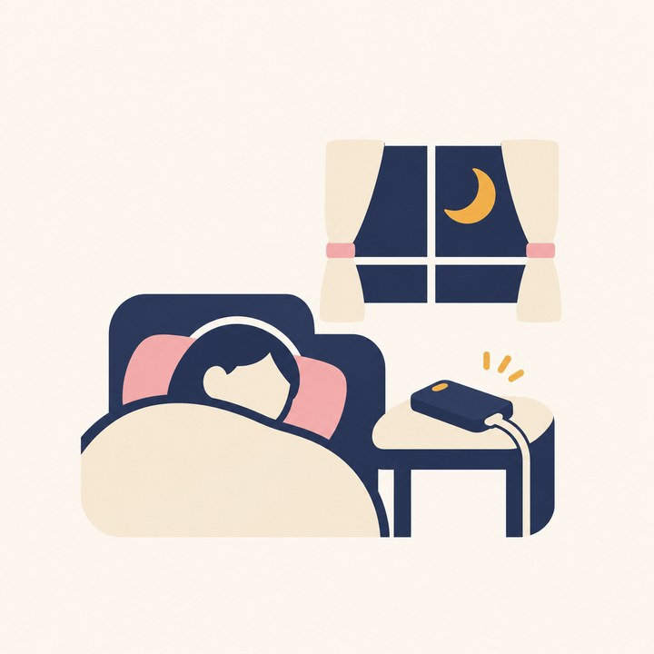

iPhone・iPad・Android の睡眠レコーダー
夜の音を、
朝に読む。
寝ているあいだの音を一晩聞いて、いびき・寝言・せき・大きな音があった所だけを、前後つきで残します。朝、夜の流れを1本の帯で見て、聞きたい所を押して聞けます。録った音は端末の外に送りません。
App Store・Google Play で配信予定買い切りで全部の機能が使えます。アプリ内課金・サブスクリプション・広告はありません。

こんな困りごとのために
何でも録られて聞くのが大変
いびき・寝言・せき・大きな音を見分けて、その所だけを前後5秒つきで残します。
機種を変えたら点数が変わった
点数を出しません。いびきは「何分あったか」と「静かなときより何 dB 大きいか」で。
録音を聞くのに追加のお金
買い切りで、録った音は全部聞けます。
何をすると変わるか知りたい
お酒・枕など、自分で付けた札ごとに、いびきの時間を比べられます。
容量と電池が心配
静かな時間は残しません。枕元で充電につないで、画面を消して使えます。
人に聞かれたくない
録った音は端末の中だけ。アカウントも、開発者のサーバーもありません。
できること
| 見分ける音 | いびき・寝言・せき・大きな音 |
|---|---|
| 朝 | 夜の帯・押して再生・お気に入り |
| いびき | 時間（分）・静かなときからの大きさ（dB）・札ごとの比べ |
| データ | iCloud Drive の毎日の控え（記録）・アカウントなし・解析と広告なし |
病気を見つけたり、判断したりするアプリではありません。気になるときは医療機関にご相談ください。
使い方・プライバシーポリシー・利用規約もご覧ください。